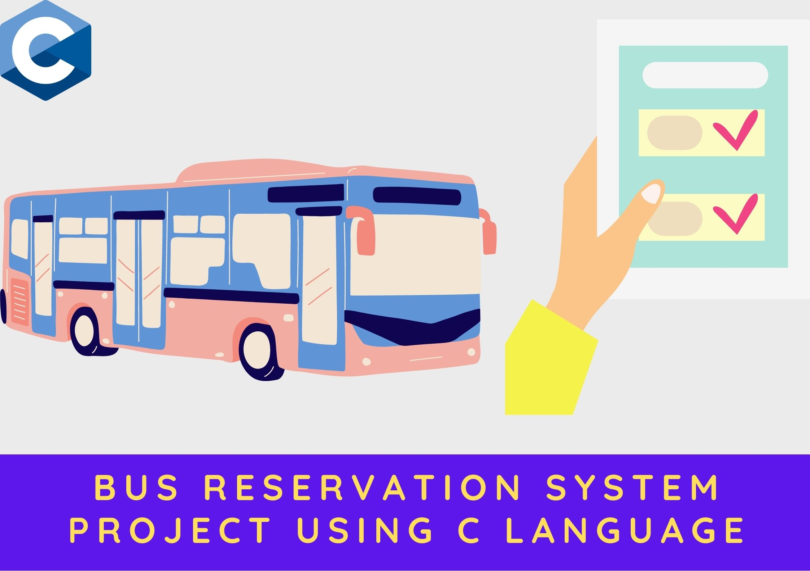
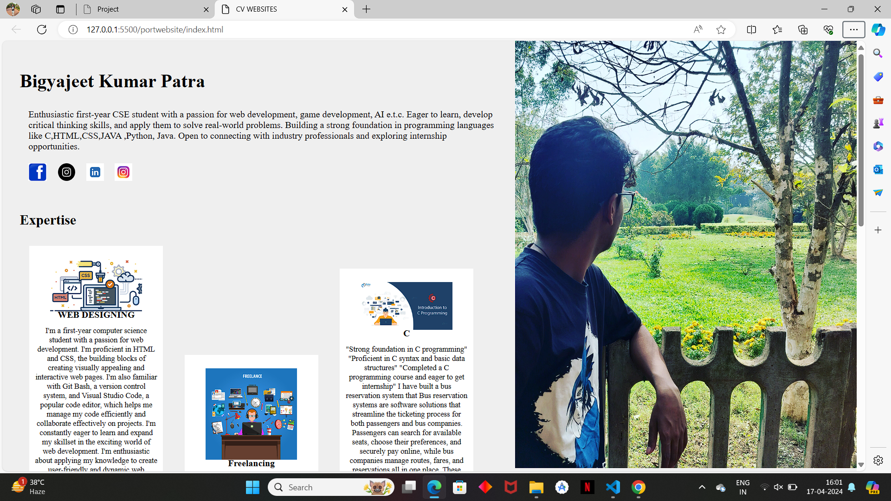
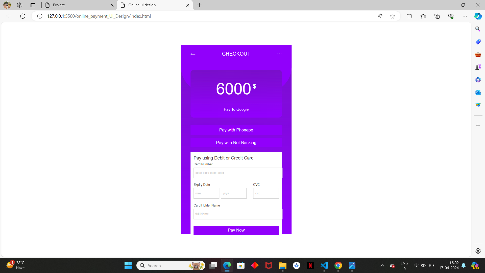
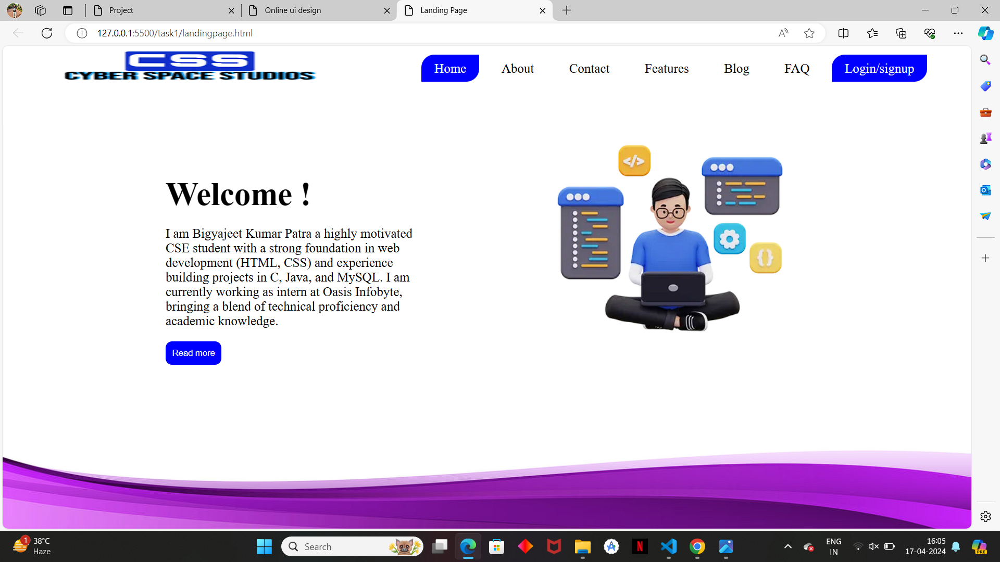

The following are the projects ,i have created till now

Bus reservation system using c:-
This user-friendly system lets you book and cancel bus tickets.
I honed my C programming skills, streamlined development with VS Code,
and practiced version control using Git Bash.
Check out the code on my
GitHub:https://Inkd.in/gYQ4BDHn.

amazon clone using html,css:-
I have built a basic "Amazon clone" using HTML and CSS, giving me a hands-on exploration of front-end
development. I learned to structure content and style layouts, replicating core functionalities of an
e-commerce website. This beginner-friendly project utilizes tools like Git Bash for version control,
allowing you to track changes andcollaborate effectively. Developed with the popular VS Code editor,
the code is well-organized and easy to follow. Check out the repository on GitHub
https://lnkd.in/gD9Pxpsa and embark on my web development journey!
used tools like:git bash, visual studio code
website:fontawesome.com, cdnjs.com(for font styling)

online cv website:-
My first online CV website built with HTML and CSS as a first-year CSE student!
Code's on GitHub https://lnkd.in/gncizQp4
to see how I used these languages. vs code and git bash is also used in this project.
I have built it on such a way that you can also visit to this online cv website on
laptops as well as on smartphone.

online payment ui design:-
built this project named "online payment Ul design" with HTML & CSS using VS Code for
development and Git Bash for version control.
Check out the code on GitHub for a glimpse into the project!
link:-https://lnkd.in/gAgbJAdc

landing page for internship task:-
In this internship task, I had the opportunity to design and develop a stunning landing page
from scratch. It was a challenging yet rewarding experience, and I am proud of the result.
Key highlights of the landing page include:
User-friendly design for a seamless experience
Engaging content to capture audience attention
Smooth navigation to guide visitors
Aesthetically pleasing visuals to enhance the user interface
I am grateful for the guidance and support from my mentors and colleagues
throughout this project. This accomplishment marks the beginning of my journey in
web development, and I am eager to take on more challenges and continue honing my skills.
Stay tuned for more updates as I progress through the program and tackle new projects.
Thank you for being a part of my journey.
check out this amazing project on
my GitHub https://lnkd.in/g7F9c_if